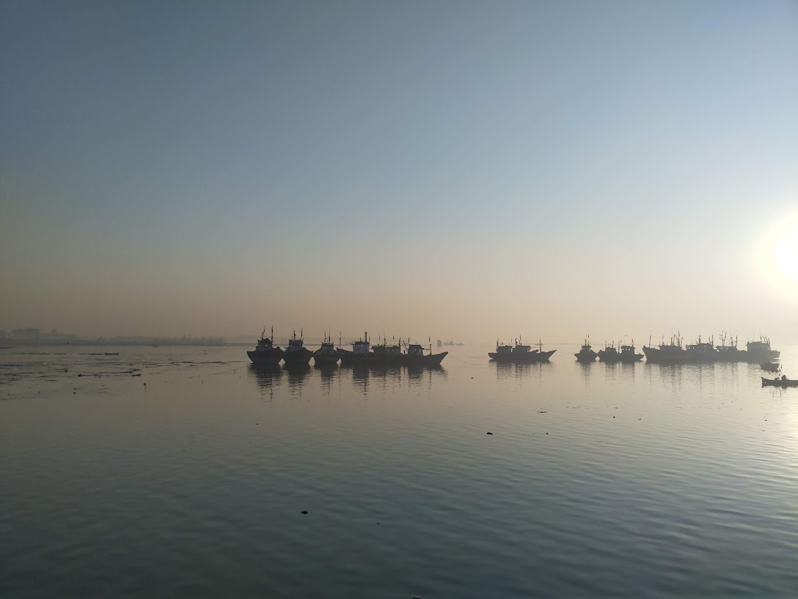
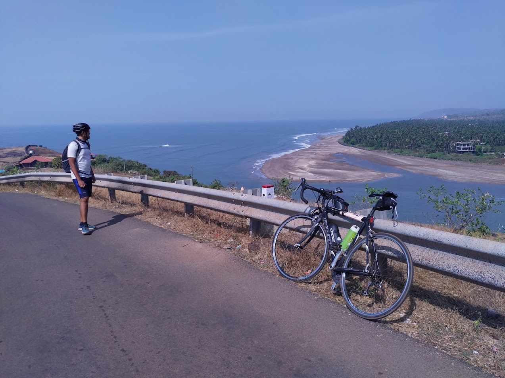
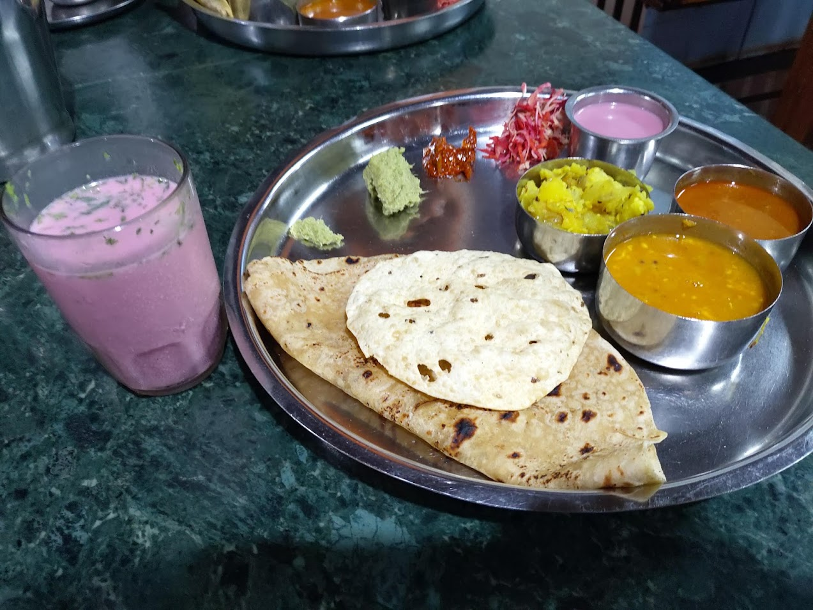
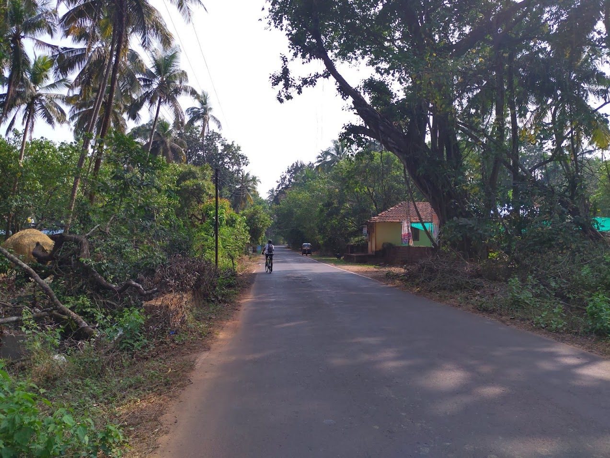
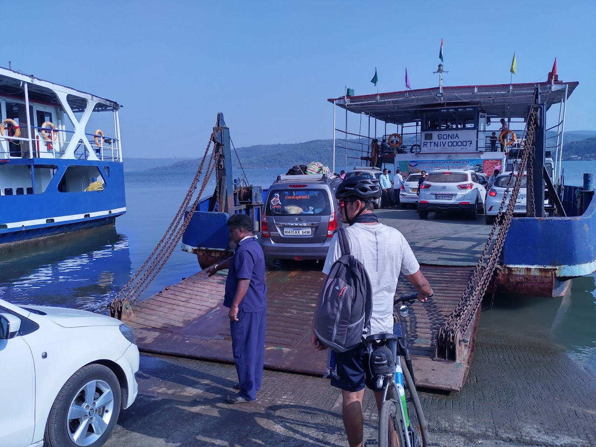
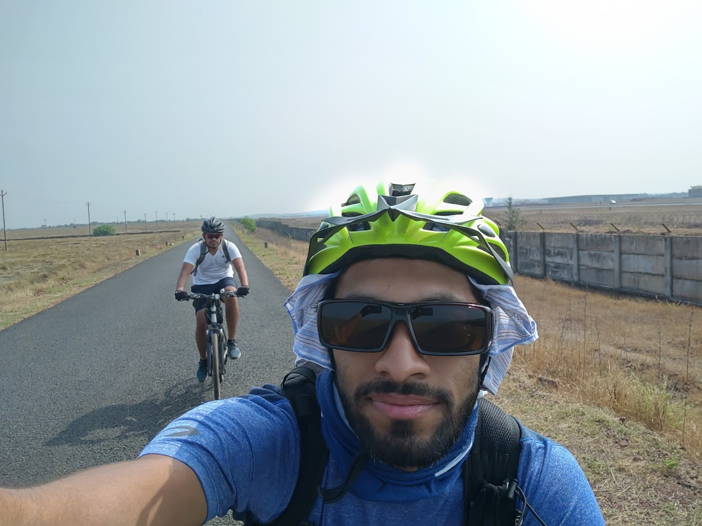
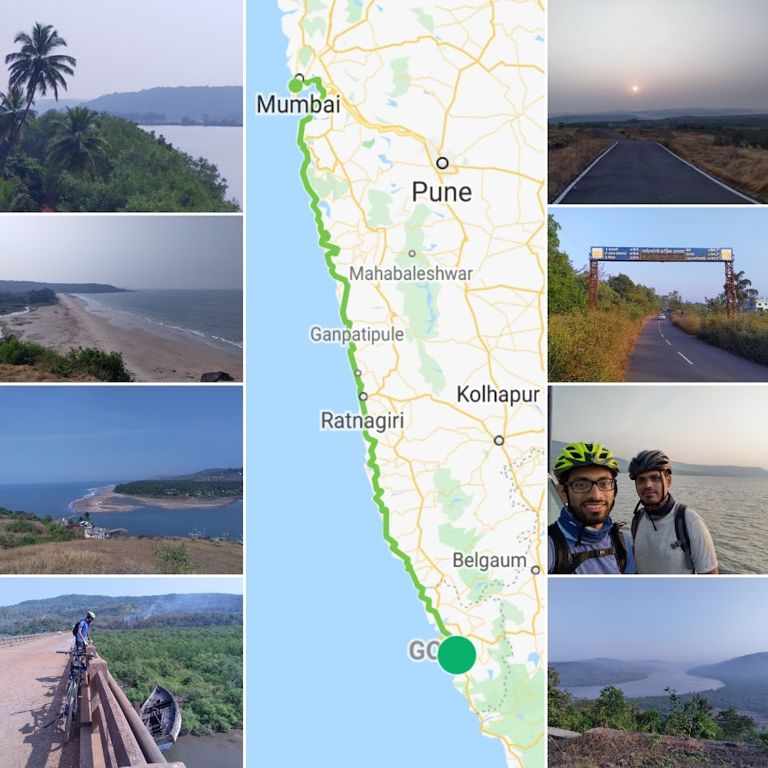

A plan to visit Goa, but unlike other plans, it actually happened and we executed it quite well with minimalist planning. A simple task- cycling from Mumbai to Goa with a speed such that we could enjoy the beauty of the Konkan region, and experience a smooth ride on the newly built scenic 'Coastal Highway'. The biggest motivation for me was to explore the land that I belong to while being on saddle. And not-so-obvious, but another aspect was to retrospect on the life-actions while enjoying the path to the hometown. Yes, sounds more like a pilgrimage rather than a 620 km endurance cycle ride! Here are the 4 key takeaways from our expedition.

1. Yeva, Konkan aaploch aasa (Welcome to Konkan, feel at home)
Konkan – the vast coastal plain of western India, known for its tropical beaches, towering coconut trees and local unique cuisine. It is a heaven for those who love cycling along countryside roads with a touch of urban backdrop and lots of nature and wilderness in between. The beauty of Konkan starts unraveling after Alibaug and continues all the way till Uttar Kannada. The warm hospitality offered by the locals truly made us feel at home. येवा कोंकण आपलोच आसा !

2. Things change! And they change fast!
Between 2015 and 2021, things in India changed rapidly at a surprising fast pace. Our entire trip was cashless! The UPI payments, since its launch in 2016, revolutionized how Indians made payments for roadside snacks and groceries. From a sugarcane-juice vendor to a Udupi restaurant, to a wada-paav vendor to a bicycle repair shop, everyone surprised us with their early adoption of the contact-free payment service in the remotest place along the Konkan belt. This mode of payment suited our bike-packing trip the most, and we could divert our focus more on our route planning.

Another quite noticeable change was the newly constructed series of roads along the coastline, aptly titled as the 'Coastal road project' that connects Mumbai to the vast Malabar coastline. This route sees less vehicular traffic due to the ghats/mountain climbs and is hence well-suited for Cycling. Along the route, we had barge-crossings at 6 places. A 1km stretch after Murud (Dighi) was completely under construction and caused slight trouble for my road-bike tires. But the other 80% of the route made us rethink our perception about this Coastal road project. If you are here on a bike (cycle), do not miss the smooth downhill descent.
Yes, things do change fast!

3. The State politics
The Sindhudurg district is at the heart of Konkan and has easy access to secluded and silent beaches like Tarkarli, Devbaug, Vengurla etc. Sindhudurg has a name-sake airport. We cycled outside the Airport on our day-4 from Devgad to Panaji. The roads were in best conditions but no hustle outside, no shops, no buildings (outside or inside), no animals, nothing. The airport was first envisaged around 15 years ago, and is expected to sky-rocket the Konkan tourism numbers post completion.

We also cycled across Jaitapur, the city which is said to house the world's largest Nuclear power plant. The village roads are still fresh with scars of the anti-nuclear protests from 10 years ago. The Nuclear plant, if functional, is said to destroy the thriving Konkan biodiversity and livelihood of fishermen. We cycled outside the closed-off fence and had to speed-through to avoid the unnecessary attention.
4. The GOA sensation
Contradictory to the contemporary beliefs, Goa has a lot more to offer than just scooter-rides, night-life and music. Loaded with views of golden-sand beaches, coconut-trees and roads that wind through green hills of western ghats, it is a genuine cycling paradise. We stuck to the inner roads of Goa to explore its beauty. Post second covid wave, the beaches still attracted masked-tourists, both local and foreigners. The local Jamun and Kokam delicacies cheered us and compensated for the delay caused by Panaji traffic.

With a bit of fitness and minimal planning, you can pack a lot of fun in your biking journey. Cycling is the most sustainable way to soak-in the culture, experience the local life at comfortable pace. In a country like India where cycling is gaining traction we tried to do our contribution – exploring the Malabar outdoors, version 2021.